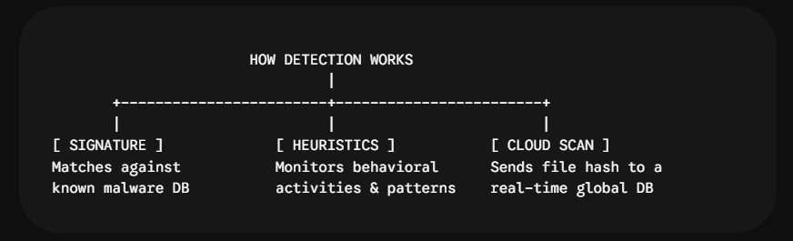

The Digital Immune System: A Complete Guide to Antivirus Software
Think of your computer or smartphone as a bustling office building. Firewalls act as the front door security, checking who comes in and out. Antivirus software acts as the internal security team—patrolling the hallways, opening suspicious packages, and neutralizing intruders that managed to slip past the front desk.
In an era where a single misclicked link can encrypt your entire hard drive and demand a cryptocurrency ransom, having a reliable digital immune system is non-negotiable. Here is a deep-dive, practical guide to how modern antivirus software works, the best options available today, how to configure them correctly, and how to stay safe in a rapidly evolving threat landscape.
1. What Is Antivirus and How Does It Actually Work?
In the early days of the internet, viruses were mostly annoying pranks that slowed down your computer. Today, malware is a multi-billion-dollar criminal enterprise. Modern antivirus software doesn’t just scan for old-school “viruses”; it uses advanced behavioural analysis and cloud databases to protect against a wide spectrum of modern threats.
But how does it actually spot the bad guys? Antivirus software uses three primary detection methods:
A. Signature-Based Detection (The Database of Known Threats)
This is the traditional method. When a new virus is discovered, security experts extract its unique “signature” (like a digital fingerprint or a specific string of code) and add it to a global database. Your antivirus regularly downloads this database and scans every file on your computer to see if any of its code matches known bad signatures.
The Catch: This method is useless against brand-new, never-before-seen malware (known as zero-day attacks) because there is no signature on file yet.
B. Heuristic & Behavioral Analysis (Watching for Suspicious Activity)
To fight zero-day attacks, modern antivirus looks at what programs do rather than just what they look like. It monitors active programs in real-time for suspicious behaviours, such as:
- Attempting to modify critical system files or boot sectors.
- Suddenly trying to encrypt thousands of files at once (a telltale sign of ransomware).
- Trying to inject code into other, legitimate programs (like a browser) or hide its own processes.
If a program behaves suspiciously, the antivirus halts it and alerts you, even if that specific software has never been flagged before.
C. Cloud-Based Scanning (Real-Time Global Intelligence)
Modern malware evolves too quickly for computers to wait for daily database updates. Instead, when your antivirus encounters a file it doesn’t recognize, it quickly uploads a tiny hash or metadata signature to a cloud security network (run by the antivirus provider).
The cloud analyzes it against massive, real-time global threat datasets in a fraction of a second, ensuring you have the latest intelligence without slowing down your local machine’s memory.

2. Why Antivirus is Still Essential (Decoding the Threats)
Without an antivirus, your device relies entirely on your ability to spot every single deceptive link, fake download, and compromised email attachment—a virtually impossible task for any human. Antiviruses are your safety net against a diverse range of dangerous attacks:
- Ransomware: This is the most financially devastating malware. It sneaks onto your system, encrypts all your personal files (photos, documents, work files), and demands hundreds or thousands of dollars in cryptocurrency for the decryption key. Antivirus tools use specialized ransomware shields that block unauthorized programs from editing or locking your folders.
- Spyware & Keyloggers: Hidden programs that silently record your keystrokes, capturing your usernames, passwords, credit card numbers, and banking details, then secretly sending them back to cybercriminals.
- Trojans: Malicious software masquerading as legitimate programs (like a free game, utility tool, or software patch). Once you install it, it opens a “backdoor” for hackers to access your machine remotely.
- Adware & Potentially Unwanted Programs (PUPs): While not always directly destructive, these bombard you with ads, redirect your search engines, and can spy on your browsing behavior, often slowing your system to a crawl.
3. Top Antivirus Software Compared (Free vs. Paid)
Choosing the right antivirus depends on your technical comfort level, your operating system, and your budget. Many providers offer excellent free versions that cover the basics, while paid suites add features like identity theft monitoring, VPNs, and secure web browsers.
Here is a comparison of the most popular and highly tested antivirus tools:
| Antivirus Provider | Best For | Free Tier Features | Paid Tier Features ($/yr approx.) | Advantages | Disadvantages |
|---|---|---|---|---|---|
| Microsoft Defender | Built-in Windows Users | 100% Free: Pre-installed on Windows 10/11 with real-time scanning. | N/A (Included with Windows OS). |
|
|
| Bitdefender | Overall Desktop Security | Yes: Real-time malware scanning and web protection. | ~$24.99–$29.99/yr: Adds ransomware decryption, VPN, and optimization tools. |
|
|
| Malwarebytes | Targeted Malware Removal | Yes: On-demand manual scanning and cleanup only (no real-time cover). | ~$44.99/yr: Real-time protection, web blocking, and exploit defense. |
|
|
| TotalAV | Beginners & Ease of Use | Yes: Good on-demand malware detection. | ~$19.00/yr (first year): Real-time protection, data breach alerts, password manager. |
|
|
| Avast / AVG | Free Extras & Mobile | Yes: Real-time blocking, ransomware shield, and network scanning. | ~$39.99/yr: Advanced firewall, webcam protection, and ad blockers. |
|
|
Free vs. Paid: Which Should You Choose?
Stick with Free if: You practice safe browsing habits, don’t download files from untrusted sources, and primarily need background protection. Microsoft Defender (for Windows) or Bitdefender Free provide outstanding, quiet protection without spending a dime.
Upgrade to Paid if: You share a computer with children or less tech-savvy family members, handle highly sensitive corporate data on personal devices, or want an all-in-one suite that includes a VPN, password manager, webcam protection, and dark web monitoring.
4. How to Properly Work with and Maintain Your Antivirus
Installing the software is only the first step. To ensure your device stays protected without ruining your computer’s performance, follow these four golden rules:
Rule 1: Never Run Two Antivirus Programs at Once
You might think installing two antivirus programs doubles your security. In reality, they will conflict with each other, consume massive amounts of system memory, and often flag each other as malware. Pick one primary tool (like Bitdefender or Windows Defender). If you want a second opinion, use a manual on-demand scanner like Malwarebytes Free to run occasional checks.
Rule 2: Automate Your Updates and Scans
Thousands of new malware variants are created every day. Your antivirus is only as good as its last database update.
- Turn on Automatic Updates so your software always knows about the latest threats.
- Schedule a Quick Scan to run daily while you are eating lunch, and a Full System Scan once a week during the night or a downtime period.
Rule 3: Don’t Ignore the Quarantine Warnings
When your antivirus detects a threat, it places it in a secure, isolated folder called a “Quarantine” so the file cannot harm your computer. If a file you just downloaded gets quarantined, do not force the antivirus to restore it unless you are absolutely, 100% certain it is a false alarm. When in doubt, trust the software.
Rule 4: Know When to Use On-Demand Scanners (Like Malwarebytes)
If your computer starts acting strangely (sluggishness, pop-up ads, browser redirects) despite your real-time antivirus saying everything is fine, download and run a manual scan with an on-demand tool like Malwarebytes. Sometimes, persistent malware can evade one detection engine, and a “second opinion” is exactly what you need to flush it out.
5. What About Smartphones and Macs? (The Mobile & macOS Myth)
One of the biggest misconceptions is that Apple devices and smartphones don’t get malware. While it’s true that their sandboxed environments make infections harder, they are far from immune.
- Macs: Macs can be targeted by malware, adware, and especially browser-based exploits. If you are a Mac user, using native protections is great, but running a lightweight tool like Bitdefender or Malwarebytes for Mac can catch threats designed specifically to steal credentials.
- Android: Android’s open ecosystem allows users to install apps from third-party sources, making it a frequent target for malware. If you use Android, downloading an antivirus app (like Bitdefender Mobile Security or Avast Mobile Security) is highly recommended.
- iPhones (iOS): Because iOS is highly locked down, traditional antivirus scans aren’t possible (or needed) for malware. However, iOS users still need protection against web-based threats, phishing, and scam messages (which we covered in our Phishing & Smishing guide!).
Final Thoughts
Technology alone cannot block every malicious message or file from hitting your system. While an antivirus software is your absolute best last line of defense, it must be paired with safe browsing habits: avoid sketchy download buttons, be wary of email attachments, and always verify before you install.